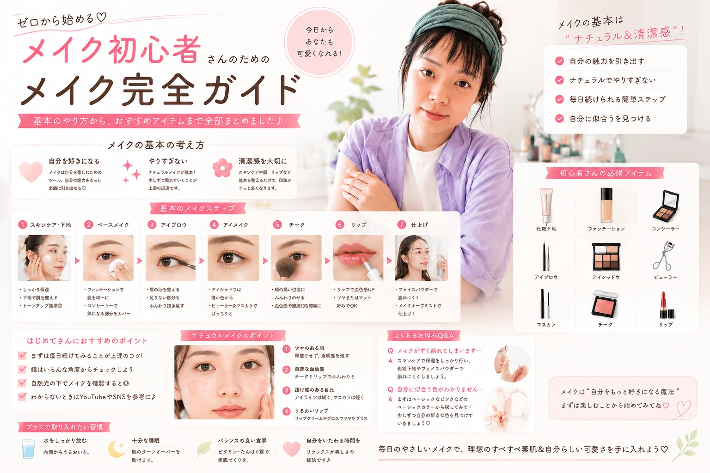

メイクは順番を覚えるだけでも、 かなり簡単になります。
最初からたくさんのコスメを 揃える必要はありません。
まずは基本のアイテムを使って、 自然に仕上げることから始めましょう。

キレイは、日常の積み重ね。

メイクを始めたいけれど、 何から使えばいいかわからない。 そんな初心者向けに、 基本の順番とポイントを簡単に紹介します。
メイクは順番を覚えるだけでも、 かなり簡単になります。
最初からたくさんのコスメを 揃える必要はありません。
まずは基本のアイテムを使って、 自然に仕上げることから始めましょう。
メイク前に肌を整えておくと、 ベースメイクがなじみやすくなります。
急いで重ねるより、 肌を整えてから始めるのがポイント。
初心者はファンデーションを 厚く塗りすぎないことが大切です。
「全部隠す」より、 肌を自然に整えるイメージで。
眉は顔の印象を左右しやすい 重要なポイントです。
初心者なら、 ベージュやブラウンなど 使いやすい色がおすすめです。
まぶた全体に 薄くのせる。
二重幅などに 軽くのせる。
必要なら 目のキワに少量。
最初は色を増やしすぎず、 自然なグラデーションを意識しましょう。
アイラインが難しい場合は、 最初から完璧に引こうとしなくても大丈夫です。
まつ毛を整えるだけでも 目元の印象は変わります。
チークは一度にたくさん塗らず、 少量ずつ重ねましょう。
リップを入れると 顔全体の印象がまとまりやすくなります。
目元を濃くした日は、 リップを控えめにすると 全体がまとまりやすくなります。
最初からすべて揃える必要はありません。 まずは使いやすいものから始めましょう。
予算が少ない場合は、 まず眉・目元・リップなど 印象が変わりやすいアイテムから 揃えるのもおすすめです。
少量ずつ重ねる。
最初は少ない色数から。
主役を1つ決める。
時間がない日は、 すべてを完璧に仕上げるより 顔全体のバランスを整えることを 意識しましょう。
最初から完璧なメイクを 目指す必要はありません。
まずは基本の順番を覚えて、 少しずつ自分に合う方法を 見つけていきましょう。